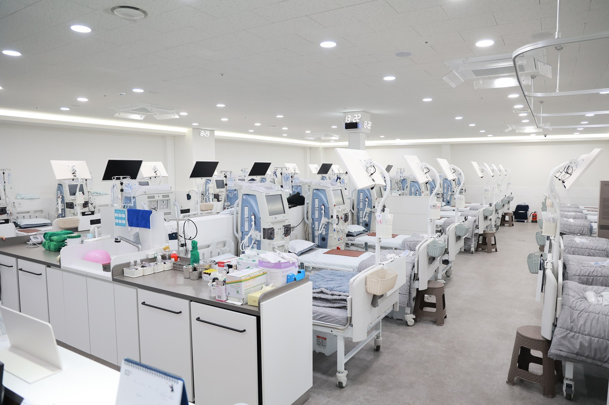
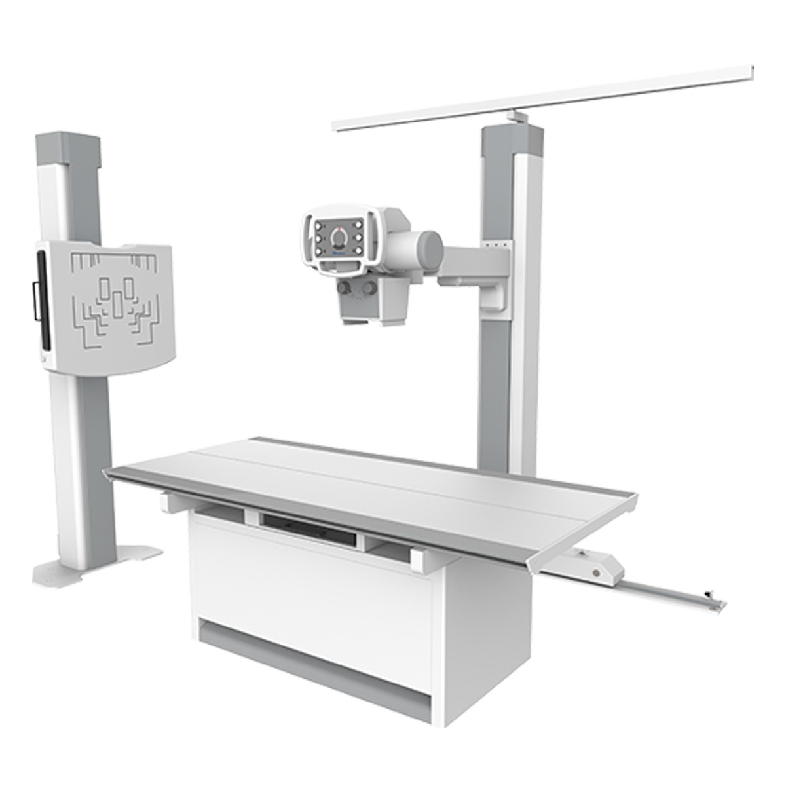
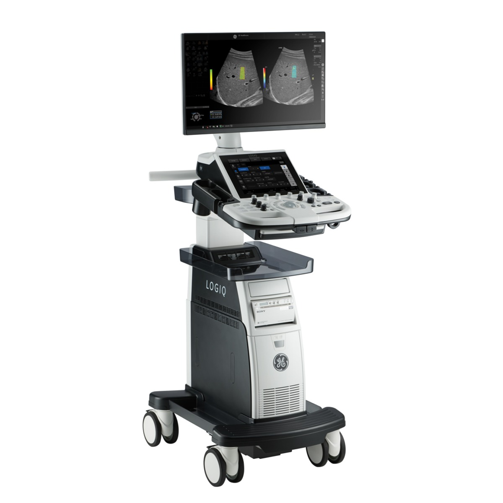
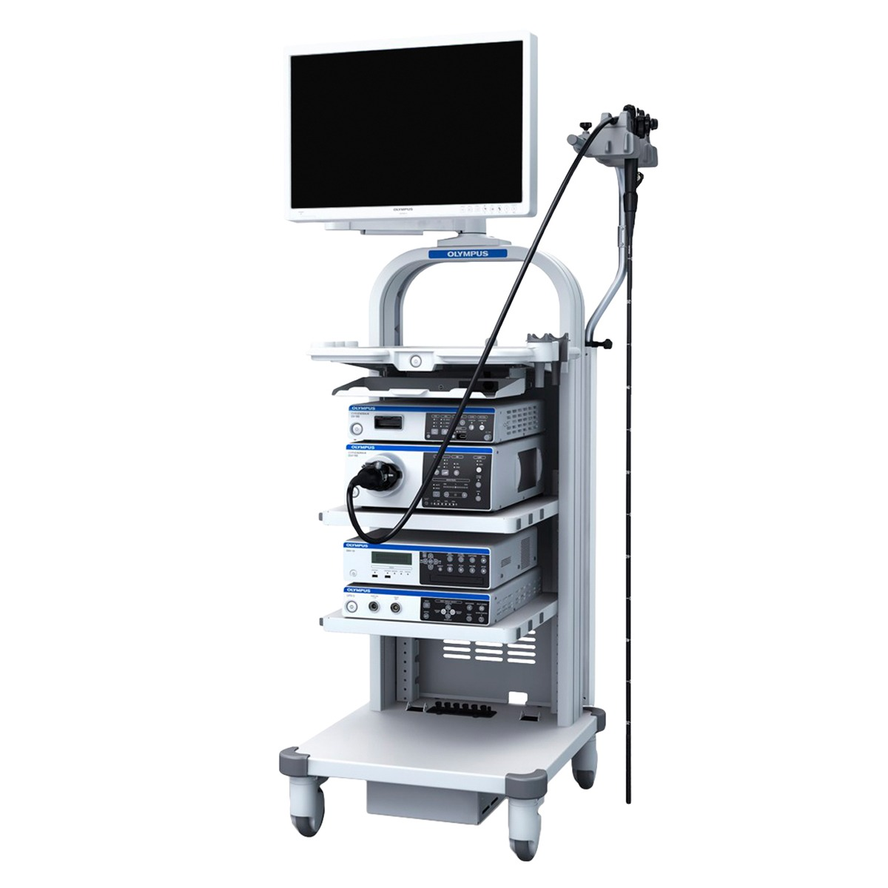
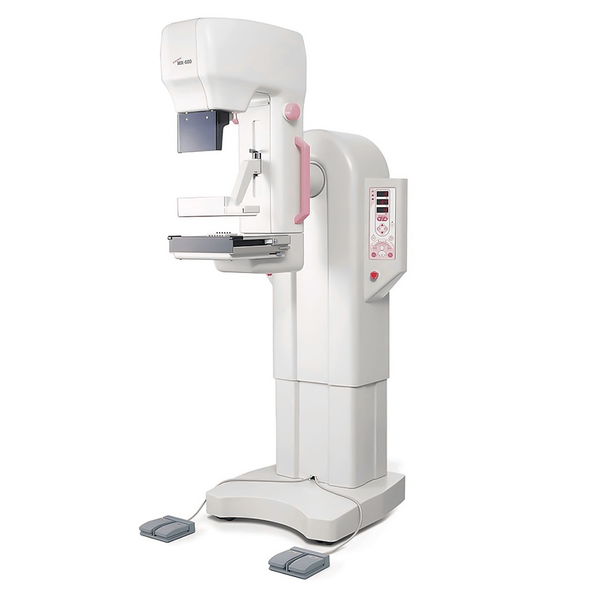
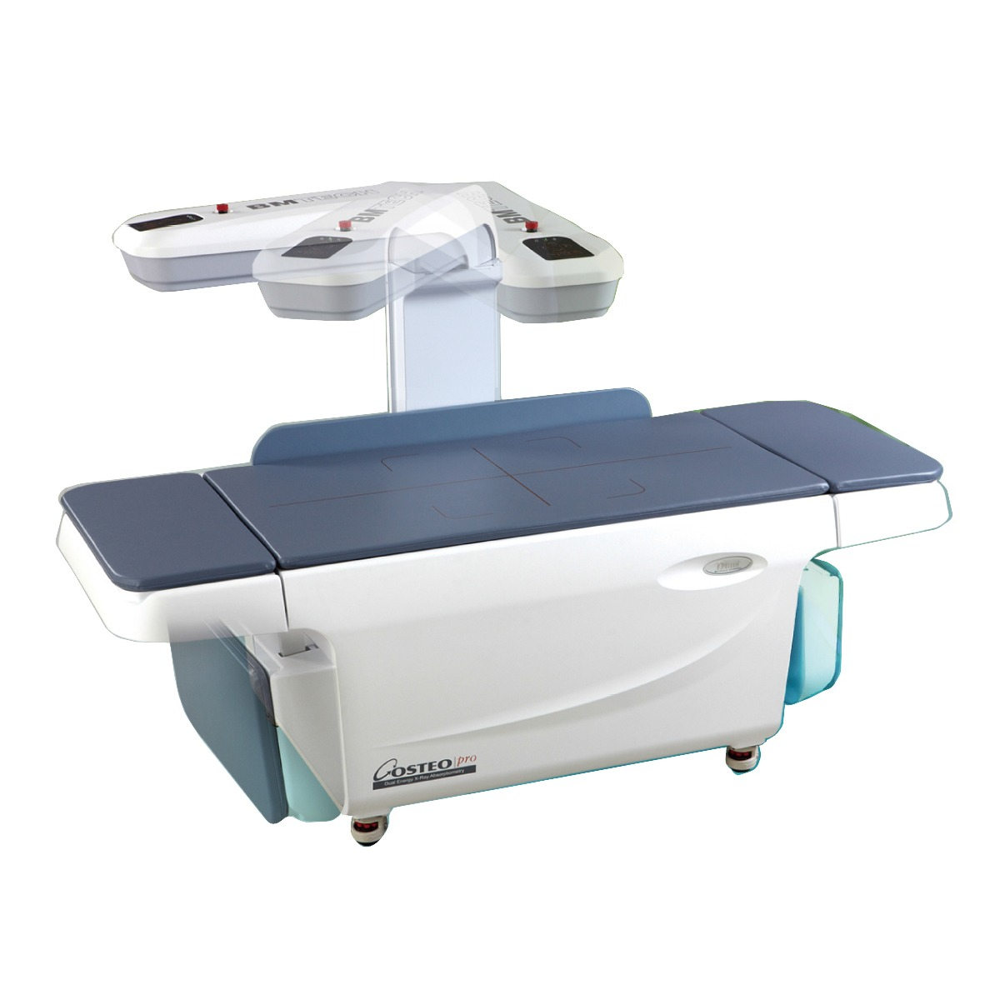
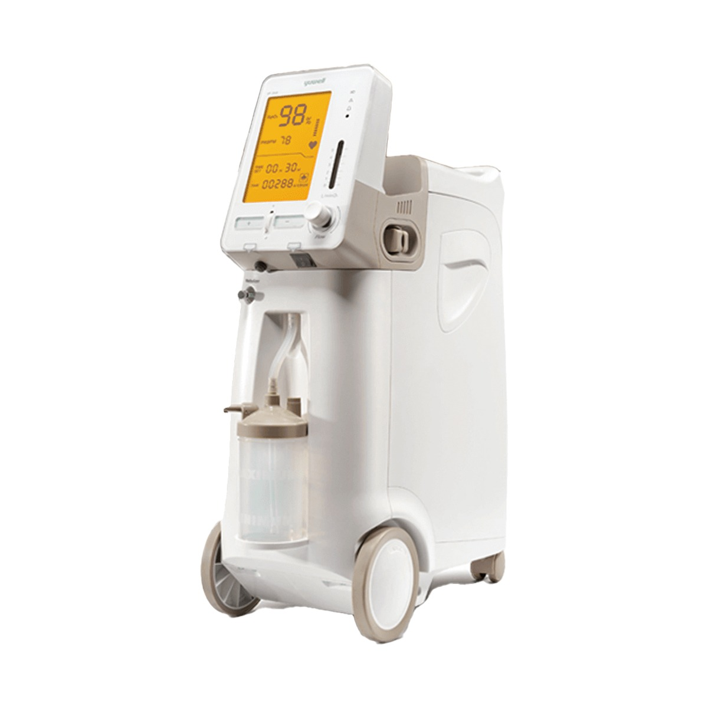

인공신장실
대학병원 출신 신장내과 투석 전문의와 다년간의 투석실 경력을 갖춘 간호사가 함께하여 전문화된 혈액투석 치료가 가능합니다. 넓고 쾌적한 인테리어, TV모니터 설치, 투석 대기실까지 모두 마련되어 있습니다.
자세히 보기 ›
환자분을 가족처럼 정성으로 보살피는 강서성모맑은내과의 약속입니다
Gangseo Maleun Internal Medicine
건강한 일상에 행복한 삶이 있습니다. 강서성모맑은내과의원은 내원하시는 환자분들의 건강을 소중히 여기며, 더 나아가 삶 자체를 존중하는 마음으로 정성 어린 진료를 제공합니다.
신장학회 인증 인공신장실과 보건복지부 인정 내과전문의가 함께하여, 만성질환 관리부터 혈액투석까지 한 분 한 분의 상태에 맞는 맞춤 진료를 약속드립니다. 치료를 넘어, 일상의 행복까지. 강서성모맑은내과에서 경험해 보세요.
Gangseo Maleun Department
내원이 망설여지셨나요?
강서성모맑은내과는 풍부한 임상경험과 깊이 있는 전문성으로 환자 맞춤 진료를 제공합니다.
Team Of Gangseo Maleun Internal Medicine
새로운 시작, 새로운 일상. 강서성모맑은내과는 진료에서의 모든 경험이 따뜻하게 진행될 수 있도록 환자분 한 분 한 분의 건강을 함께 살핍니다.
오랜 임상 경험과 깊이 있는 전문성을 바탕으로 진단부터 치료, 사후 관리까지 빈틈없이 책임지며, 신장학회 인증 인공신장실과 함께하는 안정적인 진료 환경을 제공합니다.
Why Gangseo Maleun Internal Medicine?
Gangseo Maleun Equipment
대학병원급 장비로 더 정밀하게, 더 신속하게.
환자분의 건강을 위해 강서성모맑은내과의 자신감으로 진료합니다.






Tour Of Gangseo Maleun Internal Medicine
Visit Gangseo Maleun Internal Medicine
건강한 일상을 지키는 가장 가까운 약속.
강서성모맑은내과의원으로 오시는 방법을 안내해 드립니다.
서울특별시 강서구 공항대로 200
마곡지웰타워 3층 · 5호선·공항철도 마곡역 인근